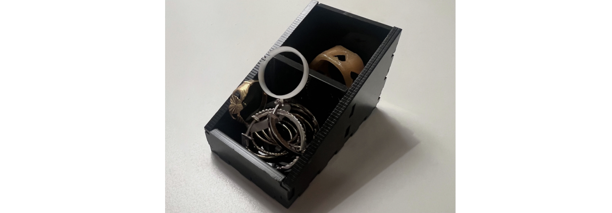

Verkefni 2 - Tölvustuddur skurður
Vínylskerinn
Fyrsti hluti verkefnis tvö, var að nota vínylskerann til að búa til eitthvað, þar sem skurðurflöturinn var 100x50 cm max. Það fyrsta sem ég gerði var að downloada Inkscape .
Ég ákvað að gera svarta límmiða. Ég ákvað að nota vínylskerann til þess að búa til nafnið mitt, ásamt lítilli mynd af flugvél sem ég fann á google. Ég skrifaði inn nafnið mitt og setti inn myndina, á sheet sem var 100x50 cm. Næst passaði ég að útlínur væru 0.02 mm á þykkt, valdi svartan límmiða og prentaði.
Hér er útkoman
Geislaskerinn
Síðari hluti verkefnis tvö gekk út á það að hanna parametrískt, geirneglt (pressfit) módel af byggingareiningum. Módelið ætti að vera skalanlegt, útfært með parametrum og í hugbúnaði að eigin vali. Hönnunin þurfti að innihalda að minnsta kosti þrjá festi punkta.
Hönnun
Það fyrsta sem mig langaði að gera var box undir snyrtidót. Ég vildi gera þríhyrningslaga box, þar sem ég gæti sett snyrtidót af mismunandi stærðum ofan í. Þríhyrningslaga hliðar myndu gera það auðvelt að sækja hluti sem voru minni, ef þeir væru settir framarlega í boxið.
Eftir því sem leið á verkefnið, og ég ákvað að búa til hringi með 3D prentara í verkefni 3, skipti ég um skoðun. Þar sem ég teiknaði hönnunina upp með parametrum var ekkert mál að skala boxið niður, og gera frekar lítið skartgripabox, þar sem ég gat geymt hringina. Mér fannst það líka sniðugt þar sem ég sá að það var ekki mikið til af því efni sem ég vildi nota og var búin að framkvæma prófanir á.
Fusion 360
Hugbúnaðurinn sem var fyrir valinu var Fusion 360, þar sem kennari námskeiðsins mældi með því. Ég hafði aldrei notað Fusion 360, en var fljót að læra með því að prófa mig áfram, þar sem ég hef öðlast ágætis færni á Inventor og Solidworks í gegnum árin.
Fyrsta skrefið var að downloada Fusion 360 á tölvuna mína. Næst ákvað ég að horfa á eftirfarandi myndband sem ég fann á Canvas síðu námsskeiðisins, til þess að öðlast betri skilning á því, hvernig best væri að útfæra hlut með byggingareiningum.
Þá byrjaði ég að teikna upp boxið í fusion. Ég byrjaði á því að búa til þá parametra sem ég þurfti að nota.
Því næst bjó ég til boxið, ég notaði myndbandið að ofan til þess að hjálpa með það. Ég var með sex body. Lokaútkoma skartgripaboxins var svona.
Þá var komið að því að fletja body-in út, en þá fylgdi ég þessu myndbandi.
Út koman leit svona út
Val á efni
Áður en haldið er lengra þarf að ákvarða Kerfið, og áður en það er gert, þarf að velja efni. Ég valdi 3mmx500mmx500mm svartan akríl.
Kerf prófun
Þá var komið að Kerf prófuninni. Ég framkvæmdi hana með Margréti Mareni. Við teiknuðum um 10 litlar kassa í Inkscape og skárum þá út. Síðan mældum við stærð kassanna sem skornir voru út, miðað við stærð ferhyrningsins sem var eftir í efninu með skíðmáli og fengum 9,89 cm og 10,02 cm. Því var kerfið:
( 0.1002 mm - 0.0989 mm ) ⁄ 11 = 0.12 mm
Frekari prófanir
Áður en það var hægt að skera út, framkvæmdi ég prófum á festingum með kerfinu sem við reiknuðum út. Ég komast að því að þetta kerf var of lítið. Þá framkvæmdi ég aðra prófun þar sem ég notaði kerfið 0.2 mm, en það virtist of stórt. Síðasta prófunin var kerf með 0.18 mm, sem passaði fullkomnlega.

DXF file
Þá gat ég hafist handa við það að setja kerfið inn í Fusion 360, og fá DXF file. Ég horfði á eftirfarandi myndband mér til aðstoðar
Ég fylgdi þessu myndbandi er breytti kerfinu í 0.18 mm. Útkoman var svona áður en ég downloadaði DXF - fileinu.
Næst sótti ég teikninguna á DXF-formi og opnaði í inkscape.
Geislaskeri - Skartgripabox
Þá var komið að því að skera út skartgripaboxið og setja saman. Hér er útkoman.
